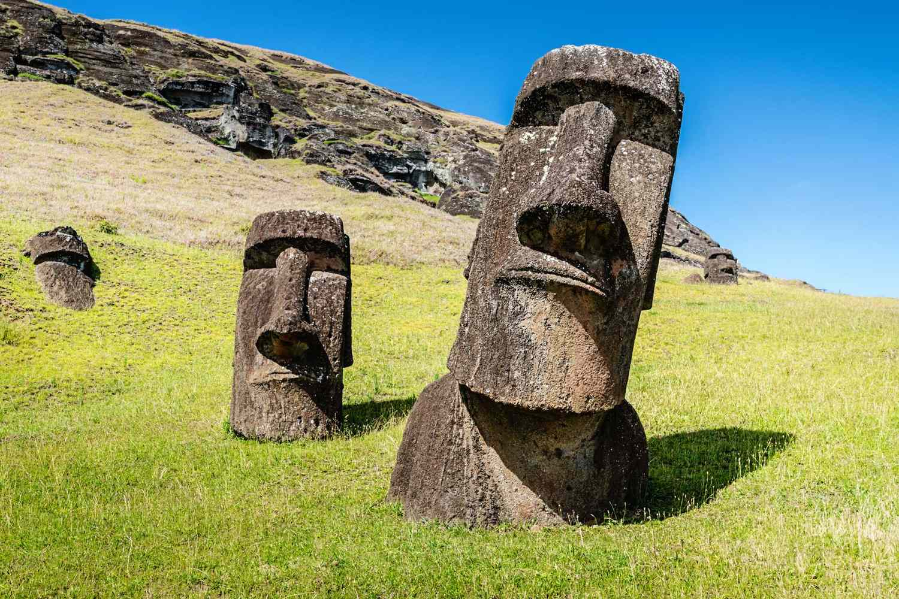
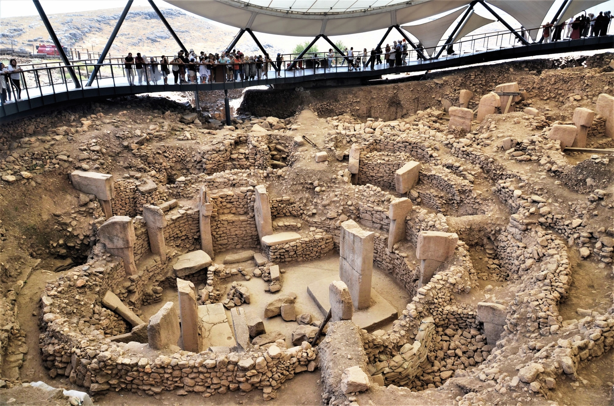
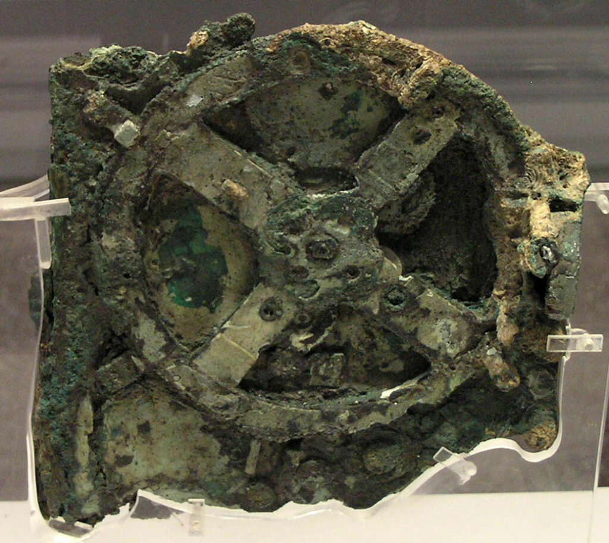

Ancient Mysteries
Explore some of history’s most fascinating archaeological mysteries and the theories that still surround them today.

Nazca Lines
Nazca Lines
Huge geoglyphs in Peru created in ancient times, some can be seen from space.
Their exact purpose is still debated.

Easter Island Moai
Easter Island Moai
Massive stone statues created by the Rapa Nui people.
How they were moved remains a mystery.

Gobekli Tepe
Gobekli Tepe
An ancient site in Turkey older than the pyramids by 6,000 - 7,500 years.
Its purpose is still uncertain. Only 5-10% of the site has been excavated.

Antikythera Mechanism
Antikythera Mechanism
An ancient Greek device used to track astronomical events.
It is often called the world’s first analog computer.
Mystery Voting Form
Which mystery interests you the most?